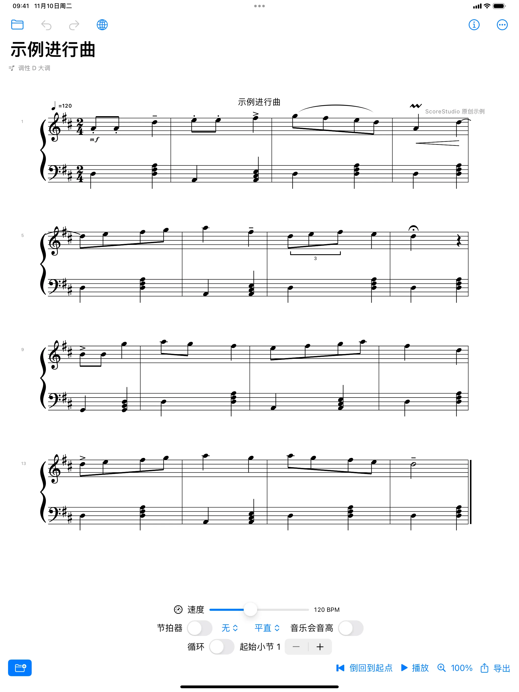
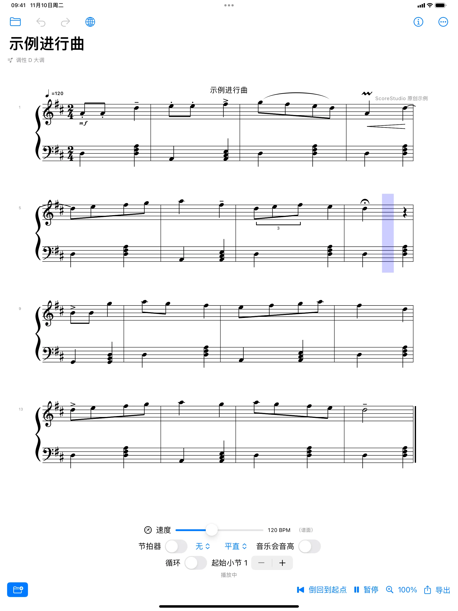
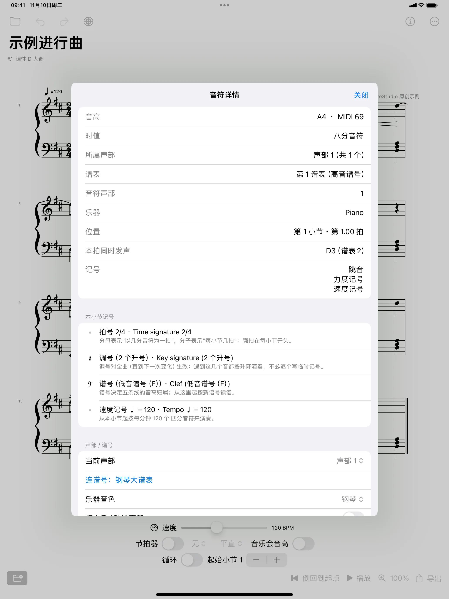
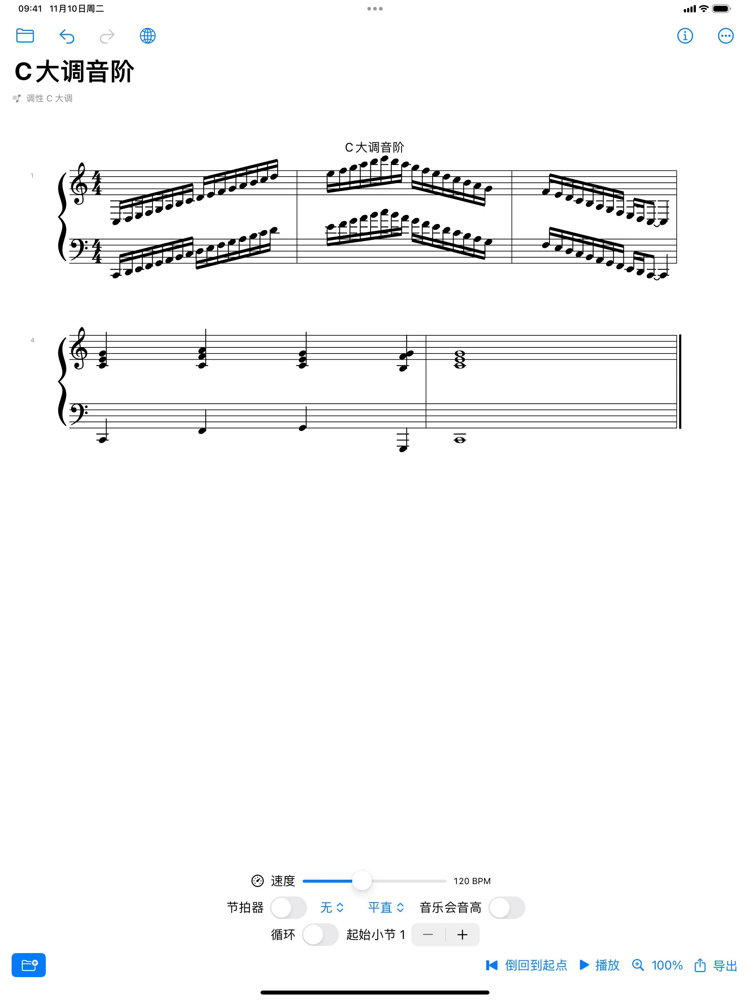

为什么它和"看谱 App"不一样
关键差别：它真正读懂了乐谱里的音符、声部与记号，而不是把谱子当成一张图片。
为练琴而做的播放
40–240 BPM 任意变速；从任意小节起播并循环；左右手 / 各声部可单独静音；点一下暂停，再按从原处接着放。
看不懂的记号，一点就懂
「音乐课堂」用中英文讲清 13 类常见记号（附点、跳音、调号、速度记号……），每配一句大白话解释。
谱子只留在你的设备里
完全离线、无账号、无权限、无 SDK、不收集任何数据。孩子的练习曲、老师的版权谱，都不上传。
打开就有声音
内置通用 MIDI 音色库，不用下载音色、不用接设备；力度、踏板、倚音、弯音（坠音 / 舀音 / 推弦）、跨谱表琶音与可调速滚奏都按谱面发声。
排得像印刷谱一样
专业制谱字体与排版，连音线、多声部休止、钢琴大谱表、鼓谱、六线谱都清楚；播放光标逐行跟随、自动翻页。
读得进，也转得出
支持三种 MusicXML 格式与 .mscz/.mscx 互转；可导出 PDF / PNG / MIDI / WAV / MusicXML，用系统分享面板送出去。
谁在用 · 四类人，四种练法
同一个 App，不同阶段的人各取所需。选一个像你的，照着试一遍。
不识谱的家长，也能陪练
「不识谱的妈妈，也能陪孩子把这一小节练对。」
- 点记号 → 课堂给中文解释，不用问老师
- 速度拉到 60，先静音左手只练右手
- 点孩子总错的那一小节，从那里起播 + 循环
- 声乐：看歌词与和弦，降速整句跟唱
把难曲拆成一小节一小节
「只练你不会的那一段，不用每次从头弹。」
- 点难点小节起播 + 循环，60 BPM 逐档提速
- 合唱 / 乐队：静音其他声部，只听自己那行
- 小号 / 萨克斯：写明"写什么音、实际响什么音"
- 播放时屏幕常亮，自动翻页不用手
把丢下的那点本事捡回来
「每天十分钟，按自己的速度来。」
- 先降速到 60，手指跟得上再逐档提速
- 只练卡住的那一小节，起播 + 循环
- 左右手分开练，移调到舒服的音区
- 记号看不懂，点一下课堂看解释
慢一点，乐谱放大，自动翻页
「手机 / 平板就是贴心陪练，儿女装好就能用。」
- 捏合把乐谱放大到看得清，放大后符号不重叠
- 速度调到 60 甚至更低，跟着整句反复听
- 蓝色光标指到哪就唱到哪，自动翻页
- 内置音色开箱即响，不用折腾设备
- 不联网、不注册，谱子与隐私都留在本地
说明：应用界面为中文 / English 双语。当前版本面向所有年龄段，尚未提供专门的适老化模式。
练琴时用得上的能力
乐谱可缩放
双指捏合放大到 4 倍，放大后符头与记号同步放大、不重叠，小屏老花都看得清。
走带顺手
倒回起点 · 播放 / 暂停 / 继续 · 从选中音符起播。
速度自由
40–240 BPM 实时可调，播放中也能改。
静音随心
钢琴左右手、各声部可单独静音；和弦记号可选静音或发声，还能单独调音量 —— 只听和弦练伴奏，或只练旋律都行。
演奏细节都听得见
跨谱表琶音画成一条贯穿两行；琶音滚奏可选慢 / 中 / 快 / 自定义四档速度；坠音、舀音、轻落音、上划出与吉他推弦（含先推后弹）都按谱面发声。
节拍器与预备拍
打点、摇摆、音乐会音高，开箱可调。
练习生成器
C / F / G 三个调各含关系小调，共 10 种练习类型：大调 / 自然小调 / 和声小调音阶、长短琶音、和弦（I-IV-V-I）；可选上下行、1–3 个八度、带终止式。生成的练习同样可整篇移调。另内置 G 大调、a 和声小调两份原谱范例。
移调随乐器
详情面板可整篇转调（升 / 降半音，±12 半音，可撤销）；导出时可一键生成 B♭ / E♭ / F 乐器分谱或低八度版本，只作用于导出副本，屏上谱面不变。
音符详情
音高、时值、声部谱表、拍位、力度、歌词、和弦一览。
反复与跳转
反复、结尾、D.C./D.S. al Fine、To Coda 按谱面走。
免费谱源
配套 205 首公开版权乐谱（艺术歌曲、弦乐四重奏，CC0 授权），网页上检索、免费下载后导入即可练。
导出分享
PDF / PNG / MIDI / WAV / MusicXML，系统面板保存。
界面一览
真实应用截图（iPad）。左起：示例曲排版 / 播放光标跟随 / 音符详情与音乐课堂 / 音阶练习。




常见问题
真的完全免费吗？靠什么维持？
应用免费、无广告、无内购、无订阅，功能没有被锁起来的部分。支持页面留有开发者邮箱，打赏纯属自愿：不解锁功能、不附带任何回报，App 内也没有打赏入口。
它会上传我的乐谱吗？需要注册吗？
不会。应用完全离线运行，不需要账号、不申请权限、不集成任何统计或广告 SDK，隐私标签为"不收集数据"。
能改谱、制谱吗？能移调吗？
不做制谱与逐音符编辑 —— 它专注看谱、听谱、练琴。但移调可用：详情面板能整篇转调（升 / 降半音，±12 半音，会改写音高与调号，可用「撤销」还原）；导出另有「移调导出」（B♭ / E♭ / F 乐器、低八度），只影响导出副本，屏上谱面不变。
支持哪些格式？能拍照转谱吗？
支持 MusicXML（.xml / .musicxml / .mxl）、.mscz / .mscx 互转，以及矢量 PDF 直读（实验性）。不含图像识别（OMR），不支持 MIDI 导入。
我不会打谱，谱子从哪来？
四条路，从省事到灵活：① 直接用内置练习谱——练习生成器可选 C / F / G（各含关系小调），共 10 种练习类型（大调 / 自然小调 / 和声小调音阶、长短琶音、和弦 I-IV-V-I），可设上下行、1–3 个八度、带终止式，另附 G 大调与 a 和声小调两份原谱范例；生成的练习还能整篇移调（±12 半音，可撤销），移调乐器（B♭ / E♭ / F）直接对上自己的调。② 老师在群里发的 MusicXML（.xml / .musicxml / .mxl）直接导入；③ 从配套的公开曲库免费下载 205 首公开版权乐谱（艺术歌曲、弦乐四重奏，CC0 授权）后导入；④ 用桌面制谱软件导出 MusicXML 再导入。本应用不做打谱、也不含拍照识别，但基础练习开箱即练，拿到谱就能用。
导入 PDF 后时值不准？
矢量 PDF 直读是实验性功能：谱表、音高与小节能较准确还原，时值仍是近似值，导入后请核对；扫描件不支持。
点了播放没声音？
应用使用随包内置的音色库，无需下载。若仍无声，请检查设备音量与静音开关，或来信反馈。
只支持 iPhone / iPad 吗？
是的，需要 iOS 16 或更高版本。目前没有 Android、Mac、网页版本。